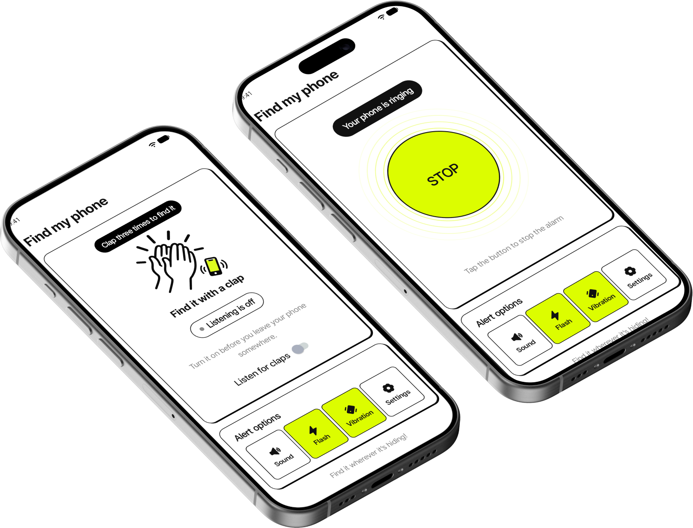
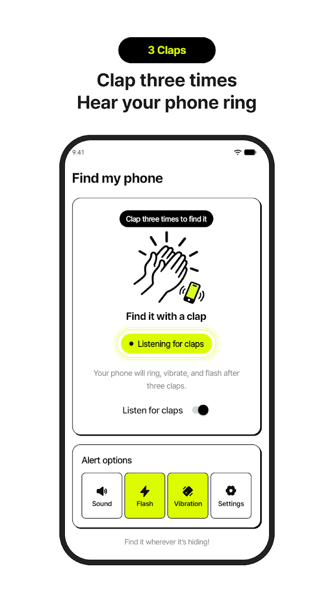
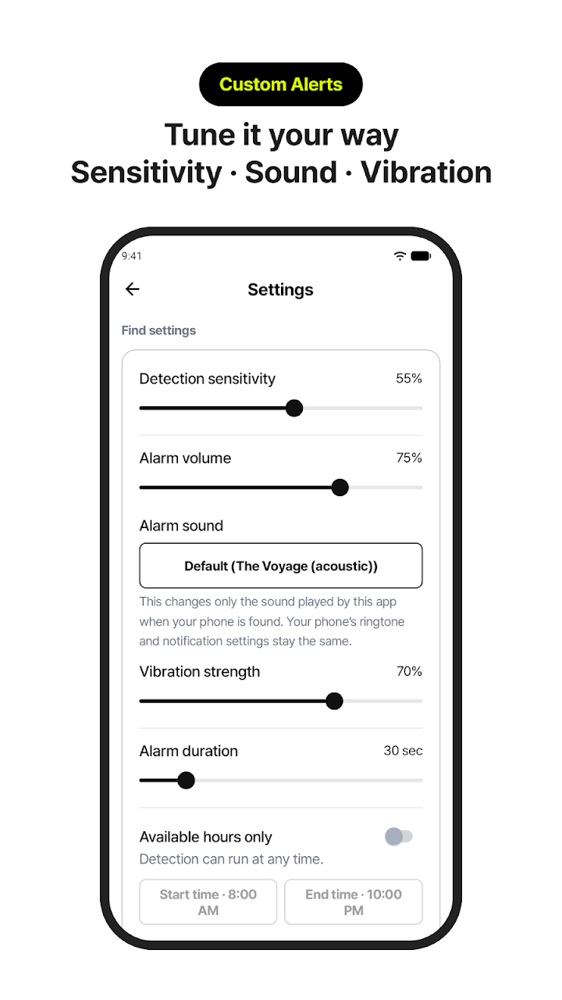
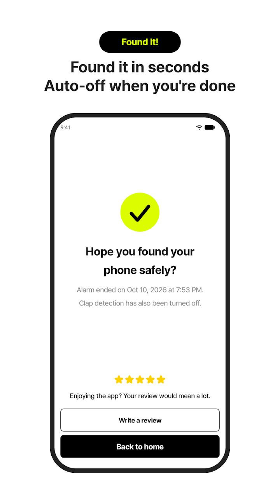

Sound · Vibration · Flash
Use one alert or combine them to fit your surroundings.
Can’t remember where you left it?
Clap and your phone answers with sound, vibration or flash.
Works on nearby phones with detection turned on.




Use one alert or combine them to fit your surroundings.
Pick any ringtone on your phone. Your system ringtone stays unchanged.
Adjust for background noise, set alarm duration and active hours.
Tap the notification to stop the alarm right away.
Claps are analyzed on your phone in real time. Nothing is recorded or sent to a server. Clap Finder does not use GPS or find phones far away.